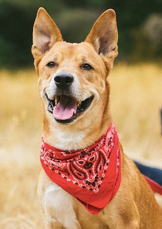

Django, the Super Loyalty Dog!
This is Django.

We rescued him from Seattle Humane Society in 2013, and he has been the most wonderful dog in the world!
Django is a very silly dog most of the time. Sometimes, he is quite smart though!
Things Django Does That Are Smart
- If we are at home and my phone rings, if I pick up and press a number, he knows someone is coming to the door soon, and he will go sit there and wait. He doesn't understand that the call is from the building callbox, or that the number I pushed is to unlock the gate...but he does know that a person will appear soon...
- Dogs randomly throw up sometimes, and that's okay. When we first got him, and he was adjusting to his new environment, the first few times he started throwing up, my husband, Dan, would pick him up and move him quickly to the entryway, where there is tile and it is easier to clean. After a while, Django started just going over to the entryway whenever he felt the urge, and would do it there. It's been 3 years now, and he's had a 100% success rate, and we haven't had to clean anything off of the carpet.
- He knows that he is not allowed on our bed. But he wants to be on there sooooo badly...so he knows that he has to be sneaky about it. And he's smart enough to know when we are doing tasks that will keep us occupied for enough time for him to sneak up on there. For example, he knows that if we are working in the kitchen, we'll probably be occupied for a few hours, and that's the perfect opportunity for him to get some bed time.
Another interesting fact about Django is that he is not as interested in food or toys as much other dogs usually are. The thing that he loves the most is actually other dogs! If there are dogs around, he will have no interest in food or toys.
List of Django's Favorite Things to Play With
- Dogs
- Another dog
- More dogs
- Oh wait, is that a dog over there?!